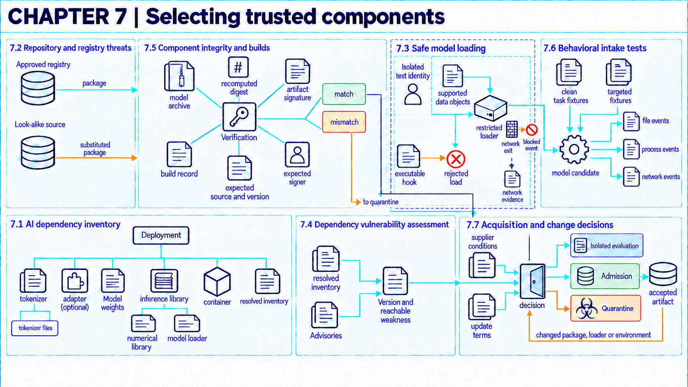
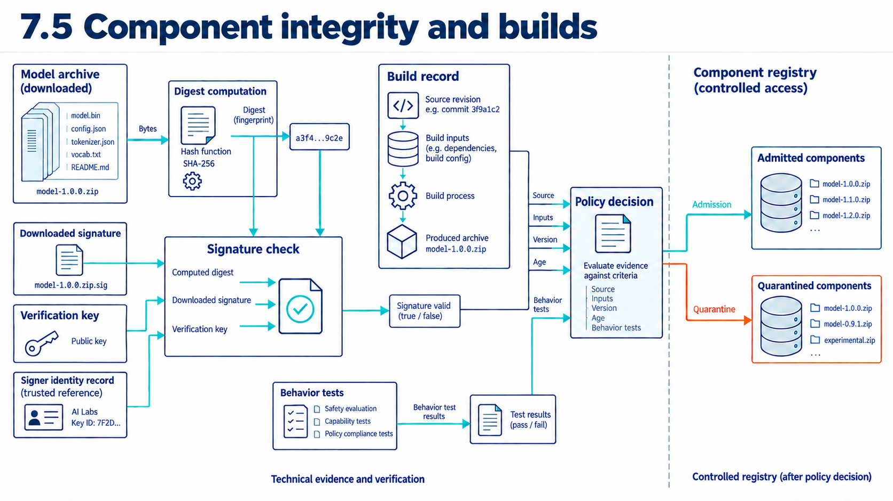

7 Supply chain compromise
A model file from the intended supplier can still execute unwanted code during loading or behave harmfully during use.
Models and their supporting software can introduce unwanted code or behavior when an organization downloads, builds, or updates them. Checking the training data alone would miss these routes. A digest is a cryptographic hash used to identify file bytes. A signature links a file or statement to a signing key under the verification scheme. Together, the digest and signature help identify the download. Loader tests examine what executes during loading, and behavioral tests examine what the running model does. These checks answer different questions, so a successful result from one cannot substitute for the others.
Assume the organization operates the model on its own infrastructure and evaluates a model package, adapter, and dependencies for that configuration. When the organization instead calls a provider-operated model API, it inspects its own application components and dependencies together with whatever supplier evidence the provider makes available. The provider’s weights and serving internals remain outside that inspection.
An intake decision determines whether a particular version may run in a particular environment. For example, permission to test a package in an isolated environment does not imply permission to give it production credentials.

7.1 Tracing AI dependencies
Spracklen et al.1 reported at USENIX Security 2025 that code-generating language models can name software packages that do not exist. The paper calls these package hallucinations. Across 576,000 generated code samples, the authors reported average percentages of hallucinated packages of at least 5.2% for commercial models and 21.7% for open-source models. The study measured generated code, not installations inside any organization. If someone registers a package under a made-up name and the installer selects it, that name in a build file can bring in code the author never intended. The reviewed dependency list and the installed code can then differ.
An intake review can miss the component that actually introduces risk. The review typically starts from a short list of direct entries, while the executable path includes everything those entries pull in.
An AI dependency is a model, data set, library, service, prompt resource, or other component on which the AI path depends. A transitive dependency is used through another dependency rather than selected directly.
Guidance from the UK National Cyber Security Centre (NCSC), CISA, and international partners2 includes models, data, libraries, modules, middleware, frameworks, external interfaces, prompts, logs, and assessments among the AI supply chain components or assets to track. The NIST Secure Software Development Framework (SSDF)3 calls for collecting and maintaining origin records for every component of each software release, for example in a software bill of materials.
The inventory links each component to its version, supplier, acquisition channel, dependants, update path, and execution environment. SSDF covers software, so the organization must extend the record to data sets, weights, adapters, and remote model services. A model repository can contain parameter files, text-processing software, configuration, custom loading code, and documentation. Their roles determine what the intake review must check.
A tokenizer converts text into the token identifiers a model accepts. Its code performs the conversion using vocabulary and configuration files, which must match the model’s expected token mapping. Changing that mapping can change the input even when the parameter files stay fixed (Hugging Face tokenizer documentation4). A weight shard stores part of the model’s learned parameters in a separate file. A shard index maps parameter names to their files so the loader can assemble the saved model (Hugging Face checkpoint documentation5). An adapter supplies additional learned parameters used with a base model, as explained in Chapter 3. A model card is accompanying documentation about a model’s intended uses, training, evaluation, and limitations (Hugging Face model-card documentation6). The card describes the package. The tokenizer code executes, and the loader reconstructs parameters from their storage format. These distinctions explain why a documentation review cannot replace loader and behavior tests.
An intake policy can require a version, supplier, download location, and intended environment for every component before a build proceeds. The dependency resolver’s output and a trace of runtime loads let reviewers compare the recorded list with the components actually found. The useful count is recorded components divided by all components found by those checks. A high fraction can still hide an undeclared download that neither check observed. Maintaining the list also takes staff time and storage, and a previously accepted list can become incomplete after an update.
Example
Tracing a support-model inventory. Suppose reviewers must identify everything needed to run an internal support model. They start from one deployment file that directly lists four entries: a model package, a tokenizer, an inference library, and a container. Inspecting what those entries pull in adds a numerical library and a model loader used through the inference library. Against the approved component record, they log the six components found in this simplified example, two of them transitive, with versions, suppliers, download locations, and update paths. Reviewing only the four direct entries would have left two executable dependencies outside the intake decision, so the trace tells the reviewers which components the later source, loader, vulnerability, build, and behavior checks must each cover. The count bounds this illustration. It is not evidence that full dependency enumeration on a real system is complete.
7.2 Substituted and look-alike packages
The PyTorch team7 reported on December 31, 2022, that PyTorch-nightly installs made with pip between December 25 and 30, 2022, could obtain a malicious package named torchtriton. It was a dependency confusion attack: the installer took an attacker’s package in place of the intended dependency with the same name. The post did not state how many machines installed it. The uploader later called the package research, a claim that has not been verified. The name matched, so only a check of source and file identity could have told the two packages apart.
A restricted loader can limit code execution from a substituted file, but it cannot establish that the organization received the intended model. A package may load successfully while containing different weights or a different dependency from the one approved.
Dependency substitution causes a build or user to obtain an attacker-controlled component in place of the intended one. A look-alike package uses a confusing identifier to attract mistaken installation.
Supply Chain Levels for Software Artifacts (SLSA)8 models threats in which an adversary changes a source, dependency, build process, or artifact, and links mitigations to verified build evidence. NCSC guidance9 recommends obtaining third-party AI components from verified developers and monitoring the supply chain across the system life cycle.
The mechanism may start with a confusing package identifier or a compromised maintainer account. An altered release or transitive dependency can then enter the build. Those mechanisms alone do not establish how often substitution or successful exploitation occurs in AI repositories. The guidance supports checks of file identity, signatures, pinned versions, and build records.
A repository account or model card does not establish the identity or behavior of a downloaded file. A confusingly similar repository name can also lead a user to the wrong component. Once a file is downloaded, its format creates another question: Hugging Face10 documents the arbitrary-code risk of pickle files and warns that its repository scanner is not foolproof. A compatible data-only format avoids pickle object construction, while leaving the model’s behavior to be tested separately.
Example
Tracing a substituted package. Suppose the approved build uses package vector-helper version 2.4 from an internal registry. A test build is deliberately run without that lock, using a resolver configured to prefer a higher version from a public registry. It selects an attacker-controlled package with the same identifier at version 9.1. The download record now contains a different version, source, and digest.
A separate check against the approved lock should reject those values before the package runs. If the test records that rejection, it demonstrates enforcement for this attempted substitution. Recording only the package identifier would miss the difference. The example does not establish how often such substitutions occur.
A lock can specify the expected package, version, registry, and digest. The build system then needs to compare what the resolver actually downloaded with that reference before executing installation hooks or loading the package. A trial with seeded substitutions can report rejected substitutions out of all attempted substitutions, alongside correctly accepted packages out of all valid controls. A controlled registry adds maintenance work and may delay updates. These checks still depend on a trusted reference: a compromised approved account may publish harmful bytes that a new lock accepts, and an installer that downloads extra code can create an unchecked path.
7.3 Code execution on model load
JFrog11 reported on February 27, 2024, that it had found about 100 models on Hugging Face containing code that runs when the model file is loaded. JFrog judged that most of these payloads looked like researchers’ work. ReversingLabs12 reported two more models to Hugging Face on January 20, 2025, and published its findings on February 6, 2025. Pickle is a Python storage format that can run code when a file is loaded. Their code evaded Picklescan, a scanner for such files, because the pickle data was deliberately broken. ReversingLabs described the models as likely proof-of-concept work. The two reports show that such files were uploaded to a public hub and that a scanner missed some, not how often loading them caused harm.
A file described as model weights may still cause code to run when loaded. The intake question here is not which supplier published the bytes but what the loader does with them.
Deserialization reconstructs software objects from stored bytes. A data-only artifact is intended to contain values under a restricted schema. An executable artifact can invoke code through its format, loader, package hooks, or custom model code.
PyTorch 2.8 documentation13 warns that loading with weights_only=False can execute arbitrary code through pickle and should be limited to trusted data. PyTorch 2.8 documentation14 states that weights_only=True restricts object construction and prevents on-demand imports during unpickling. These restrictions do not establish complete isolation or resistance to every resource-exhaustion or memory-safety failure.
An isolated loading environment can withhold production credentials and block unnecessary network access. The file format and loader determine what code can run inside that environment. The surrounding operating-system controls determine which system calls that code can use. Both need testing.
Example
Testing an isolated load. Suppose reviewers load a supplier package twice in fresh test environments with no production credentials, a read-only model directory, and blocked outbound network access. Its digest matches the approved download.
In the first run, a general object loader constructs a custom object whose code attempts a network connection. Assume the network control denies and records that attempt. In the second run, a restricted loader rejects the object before constructing it, so that code never attempts the connection.
The first result tests the network control. The second tests rejection by the loader. Neither establishes that every other file, loader, or network path is confined. Resource exhaustion and memory-safety faults also need separate consideration.
Tests of the loader can count malicious fixtures rejected out of all malicious fixtures and valid packages loaded out of all valid fixtures. System records can separately show attempted file writes, process creation, and network access, including denied operations. An absent event counts only if the test exercised that path and the recorder could observe it. Isolation consumes extra compute and may change behavior compared with production. Destroying the test environment removes its local state, but does not reverse an operation that escaped it. The platform assumptions behind these controls continue in execution isolation (Chapter 8).
7.4 Dependency vulnerability assessment
Wiz15 disclosed on June 24, 2024, a flaw in Ollama, open-source software that serves language models on an organization’s own machines. The flaw, CVE-2024-37032, which Wiz named Probllama, let a crafted model manifest cause path traversal that could lead to remote code execution. Ollama had released a fix in May 2024. Wiz counted more than 1,000 Ollama instances exposed to the internet. Exposed means reachable, not confirmed to run a vulnerable version. The exposure count alone does not establish exploitation. Ollama came from its real publisher, so a source check would have passed it.
A component can be exactly the intended one and still carry a weakness. Substitution checks whether the bytes came from the right source. This question checks whether the right source released a flaw that is present in the organization’s deployment.
A vulnerable dependency is an intended component whose version contains a weakness that an accessible input, interface, or privilege can trigger. A controlled update is a version change that reviewers test, stage, and approve before it reaches production.
The inventory from the opening section supplies the starting state: exact package identifiers, installed versions, dependency edges, and the execution environment where each component runs. Assessment compares that record against the advisories and notices the organization tracks for its libraries, serving software, and drivers, then judges whether each weakness is reachable in the deployed configuration. Reviewers still record why a flaw is considered unreachable, because a later configuration change can expose it.
A staged update lets reviewers pin a proposed replacement, rebuild it in isolation, and rerun the affected loader and behavior tests before production use. Keeping the previous accepted versions and configuration gives the organization a rollback candidate if the update breaks service. Restoring it remains subject to the weakness that prompted the update.
Staging has costs and limits. Assessment is point-in-time: a new advisory can change the verdict after approval. An update can introduce new behavior or new dependencies of its own, so a version change reopens the intake decision rather than extending the old one. Serving-software and driver updates may require restarts, hardware compatibility checks, or coordinated downtime. An undeclared runtime download or a component outside the tracked inventory bypasses the assessment entirely. A passing result means reviewers found no reachable tracked weakness within the inspected scope and settings, subject to the inventory and reachability limits above. It does not show that the component is free of unknown flaws.
7.5 Verifying components and builds
Seth Larson16 reported on December 11, 2024, that four malicious versions of the Ultralytics package appeared on the Python Package Index (PyPI) between December 4 and 7. Two came through a poisoned build cache in the project’s release process. The other two were uploaded with a leftover publishing token.
A second case is disputed. In July 2025, version 1.84.0 of the Amazon Q Developer extension for Visual Studio Code included an injected prompt telling the AI assistant to wipe data. The prompt entered through a pull request that was merged into the project. AWS17 states that a syntax error kept the injected instructions from executing and that no customer resources were affected. Some press coverage disputed that account.
In both cases the harmful release came from the project’s own publishing path under the expected name. A download check alone would confirm the official file, so the review also has to ask whether that release came from the approved source and build.
The organization needs evidence that downloaded bytes match an approved release. Without that evidence, neither the source checks nor the loader tests above can connect their results to a known artifact.
The digest identifies the file bytes, and signature verification checks their link to the expected signing key. A build origin record states how a build platform produced that file from a described definition.
NCSC guidance18 recommends hashes or signatures for model files, data sets, and checkpoints so consuming systems can validate them. SLSA19 defines a record of how a build platform produced an artifact. Build L1 requires that record, while Build L2 adds signed records from a hosted platform. Neither level is a model-behavior guarantee.
Verification recomputes the file digest and checks the signature chain and expected signing identity. It also authenticates the build statement from an approved builder and checks that the statement identifies that same file digest. Only then can its source revision and build settings be compared with the approved build policy. A match establishes identity or build evidence under those assumptions. It does not show that model behavior is acceptable, so behavioral intake tests remain necessary.
Example
Checking byte and build identity. Suppose reviewers receive a model archive with a signature, a signer certificate, and a build statement. The approved reference specifies supplier key K-7, builder B-2, source revision a41c, and build profile gpu-inference-3. Recomputing the archive digest gives d92e, and the archive signature validates under K-7. Reviewers separately authenticate the build statement as coming from approved builder B-2. Its subject digest is d92e, which ties the statement to these archive bytes, and its source revision and build profile match the approved reference. This supports byte identity and the asserted build path under the trusted key and builder. It says nothing about training-data integrity, hidden behavior, or later runtime configuration.

The verification record connects the admitted file to the expected digest, signing identity, source revision, and build policy. Reviewers can check how many release files have these records out of all release files, then investigate gaps rather than treating one verified file as evidence for the whole release. Signing adds key-management work, and controlled builds add operational cost. A stolen trusted key or a compromised approved builder may produce evidence that passes verification. File identity therefore remains separate from safe behavior.
7.6 Testing acquired components
An artifact can have an accepted digest and still behave harmfully. Identity evidence answers which bytes arrived. It cannot answer what the model does once it runs.
A behavioral intake test runs clean-task and targeted security cases against an acquired component. The isolated test also monitors side effects before admission.
NCSC guidance20 recommends security evaluation before release and continuing measurement of model and system behavior. The NIST adversarial machine learning taxonomy21 shows that a model artifact can contain malicious functionality even when it can be loaded and identified.
The test compares behavior with an accepted baseline and monitors network, file, and process activity in isolation. Passing selected tests is limited evidence, not proof of harmlessness. A dormant trigger, a delayed action, or an unmonitored interface can bypass the suite, and the available sources do not supply a reproducible method for detecting every unexpected side effect during model and adapter intake.
A release rule can require separate thresholds for ordinary task results, targeted failures, and unexpected side effects. A useful report retains each denominator: ordinary cases tested, eligible targeted cases tested, and the monitored test runs. Combining them into one score could conceal a targeted failure. More tests consume compute and analyst time.
Example
An acquired classifier before admission. Suppose the application classifies support requests as account-support or billing-support. Model M1 is the accepted baseline and M2 is a downloaded candidate with a verified file digest. An isolated harness runs each model on the same 20 ordinary requests and 10 targeted requests. Each request has a reference category. The targeted set adds a suspected trigger to requests whose correct category remains unchanged.
Before testing, the owner requires at least 19 correct ordinary results out of 20, no wrong targeted results out of 10, and no unexpected side effects in any of the 30 runs per model. Monitoring records attempted network connections, writes outside the assigned scratch directory, and unexpected child processes. Those checks cover the configured interfaces, not every possible behavior.
Assume M1 gives 20 correct ordinary results and no targeted failures. M2 gives 19 correct ordinary results but two wrong targeted results. Neither model produces a monitored side-effect event in its 30 runs. M2 passes the ordinary-task threshold and the monitored side-effect check but fails the separate targeted criterion.
Conclusion. The owner withholds M2 from this use and retains M1 while investigating the two failing inputs. The digest identifies the tested candidate. It does not change that decision. The result concerns these versions, cases and monitored interfaces. It does not establish that M1 or M2 is safe against every trigger.
7.7 Component acceptance and rollback
Each check above produces one piece of evidence. Admission is the recorded decision that joins them and states what use, if any, the result permits.
An acceptance criterion states the evidence and threshold required for use. An approved component is the exact version admitted for a specific environment and purpose. A rollback point is a prior accepted state that can be restored.
SSDF22 supplies shared secure-development practices that producers and purchasers can use in supplier communication and acquisition. NCSC guidance23 recommends alternate solutions for mission-critical systems when suppliers do not meet security criteria and calls for versioned update processes.
The intake record joins inventory, loader behavior, source identity, build evidence, behavioral tests, license conditions, supplier commitments, and rollback readiness. Approval applies only to the recorded version and environment. A rollback cannot remove every downstream effect of earlier execution.
Example
Deciding on a versioned admission. Suppose reviewers must decide whether model package 3.2 may enter a restricted test environment. Its record shows matching bytes and signature, a data-only load, and no unexpected side effects in the selected tests, but one supplier commitment about update notice is still unresolved. The production criteria require all technical checks plus a documented update condition, so production admission remains denied. Assume a separate evaluation policy permits 14 days of isolated testing with production credentials and network access blocked. The organization records approval under that narrower policy. That conditional admission holds for one version in one environment and reopens if the package, loader, supplier key, or environment changes. Any earlier side effects still require investigation after rollback.
A deployment controller can enforce an admission decision by checking the package digest, destination environment, permitted capabilities, and expiry before allowing it to run. Its records can then show which version ran, which capabilities were denied, and when the permission ended. An approval document alone does not enforce those restrictions. A copied package deployed outside the controller may bypass them, and credentials or network settings may change after the initial check. Restricted evaluation also needs its own environment and reviewer time.
The response depends on what failed. A digest mismatch can justify quarantining a download before it runs. Evidence of a compromised signing key can justify withdrawing trust in that key and asking its owner to revoke it. If a package already executed, investigators also need to identify affected deployments and any exposed credentials. Removing the package or restoring an earlier version does not undo data transfers or business operations it already performed. The fuller investigation and restoration method is developed in recovery (Chapter 16).
The intake record supplies component identity and initial test results for release decisions (Chapter 14) and a baseline for system monitoring (Chapter 15). Supplier commitments affect deployment choice (Chapter 19) and supplier responsibilities (Chapter 21). Even an admitted component can expose data through the platform on which it runs, which leads to execution isolation (Chapter 8).
Note
Chapter checkpoint. A supplier model archive has a valid signature and matching digest. Its general loader creates a custom object, while a restricted loader rejects that object. Clean behavior tests pass. Can the organization approve production use?
Answer. The signature and digest support byte identity under the trusted signing key. They do not establish safe loading or acceptable model behavior. The rejected custom object shows that loader choice changes the execution path, and clean tests do not cover targeted behavior or every side effect. Production use remains unapproved. Further isolated investigation needs its own authorization and verified containment, while loader, targeted-test, supplier, update, and rollback criteria remain unresolved. Any later version requires a new decision.
Spracklen et al., “We Have a Package for You! A Comprehensive Analysis of Package Hallucinations by Code Generating LLMs,” Proceedings of the 34th USENIX Security Symposium (2025), source. The paper measures model output in a test setting and does not report packages installed or exploited in real organizations.↩︎
UK National Cyber Security Centre, CISA, and international partners, Guidelines for Secure AI System Development, version 1.0 (2023), Secure development, “Secure your supply chain” and “Identify, track and protect your assets,” PDF p. 12, source.↩︎
Murugiah Souppaya, Karen Scarfone, and Donna Dodson, Secure Software Development Framework (SSDF) Version 1.1: Recommendations for Mitigating the Risk of Software Vulnerabilities, NIST SP 800-218 (2022), practice PS.3, task PS.3.2, printed p. 10, source.↩︎
Hugging Face contributors, “Tokenizers,” Transformers v4.57.1 documentation, introduction and “Tokenizer classes,” source. The matching-vocabulary requirement concerns the model input representation, not assurance that a package is safe.↩︎
Hugging Face contributors, “Instantiate a big model,” Transformers v4.47.1 documentation, “Sharded checkpoints” and “Shard metadata,” source. The index maps parameter names to files. Shard sizes and file formats can vary.↩︎
Hugging Face, “Model Cards,” Hub documentation, “What are Model Cards?” and “Model card metadata,” retrieved September 24, 2026, source. Descriptive documentation is distinct from verification of the downloaded bytes and their behavior.↩︎
PyTorch Team, “Compromised PyTorch-nightly dependency chain between December 25th and December 30th, 2022,” PyTorch blog, December 31, 2022, source. The post does not say how many machines installed the package, and the uploader’s research claim is unverified.↩︎
SLSA contributors, Supply chain Levels for Software Artifacts, specification v1.1, “Supply chain threats,” threat diagram and Build track, source. Version 1.1 is a fixed historical edition, marked retired on the current site.↩︎
UK National Cyber Security Centre, CISA, and international partners, Guidelines for Secure AI System Development, version 1.0 (2023), Secure development, “Secure your supply chain,” PDF p. 12, source.↩︎
Hugging Face, “Pickle Scanning,” Hub documentation (living page), “Hub’s Security Scanner” and “Disclaimer,” source. The documentation describes scanning and warns that it is not foolproof. It does not measure attack frequency.↩︎
JFrog Security Research, “Data Scientists Targeted by Malicious Hugging Face ML Models with Silent Backdoor,” JFrog blog, February 27, 2024, source. JFrog judges most payloads to be researchers’ work, so the count is not a count of attacks.↩︎
ReversingLabs, “Malicious ML models discovered on Hugging Face platform,” RL Blog, February 6, 2025, and the related press release, source. ReversingLabs calls the two models likely proof of concept and reports no victims.↩︎
PyTorch contributors, “torch.load,” PyTorch 2.8 documentation, Warning below the parameter descriptions, source.↩︎
PyTorch contributors, “Serialization semantics,” PyTorch 2.8 documentation, updated May 19, 2025, “torch.load with weights_only=True,” source. This description restricts object construction and on-demand imports. It is not an assurance of complete loader isolation.↩︎
Wiz Research, “Probllama: Ollama Remote Code Execution Vulnerability (CVE-2024-37032) – Overview and Mitigations,” Wiz blog, June 24, 2024, source. The exposed-instance count measures internet reachability, not vulnerable versions or confirmed exploitation.↩︎
Seth Larson, “Supply-chain attack analysis: Ultralytics,” The Python Package Index Blog, December 11, 2024, source. The analysis comes from the package index and covers the publishing path, not the effect on users who installed the versions.↩︎
Amazon Web Services, “Malicious script injected into Amazon Q Developer for Visual Studio Code (VS Code) Extension,” security advisory GHSA-7g7f-ff96-5gcw, July 2025, source. This is the vendor’s own account, and its statement that the code could not run and affected no customers is disputed in press coverage.↩︎
UK National Cyber Security Centre, CISA, and international partners, Guidelines for Secure AI System Development, version 1.0 (2023), Secure deployment, “Protect your model continuously,” PDF p. 14, source.↩︎
SLSA contributors, Supply chain Levels for Software Artifacts, specification v1.1, “Security levels,” “Build L1” and “Build L2,” source. Build L1 requires a build record. Build L2 adds signed records from a hosted platform. This is not a model-behavior guarantee.↩︎
UK National Cyber Security Centre, CISA, and international partners, Guidelines for Secure AI System Development, version 1.0 (2023), “Release AI responsibly,” PDF p. 15, and “Monitor your system’s behaviour,” PDF p. 16, source.↩︎
Apostol Vassilev et al., Adversarial Machine Learning: A Taxonomy and Terminology of Attacks and Mitigations, NIST AI 100-2e2025 (2025), Section 2.3.4, report pp. 26-27, source.↩︎
Murugiah Souppaya, Karen Scarfone, and Donna Dodson, Secure Software Development Framework (SSDF) Version 1.1: Recommendations for Mitigating the Risk of Software Vulnerabilities, NIST SP 800-218 (2022), Executive Summary and Section 2, source.↩︎
UK National Cyber Security Centre, CISA, and international partners, Guidelines for Secure AI System Development, version 1.0 (2023), “Secure your supply chain,” PDF p. 12, and “Follow a secure by design approach to updates,” PDF p. 16, source.↩︎